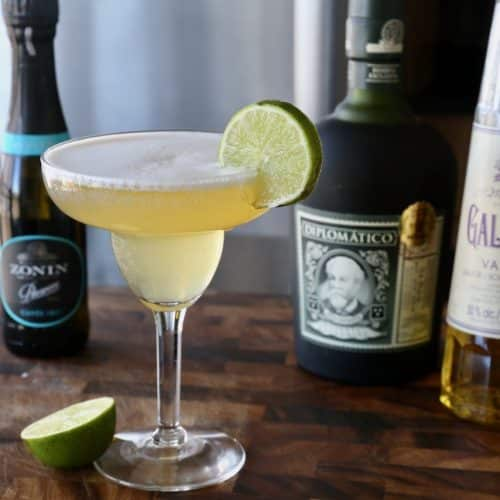

barracuda
Ingredientes:
- 45 ml de ron dorado
- 15 ml de Galliano
- 60 ml de jugo de piña
- Un chorrito de jugo de limón (10 ml aprox.)
- Un toque de vino espumoso
- Hielo en cubos
- Rodaja de piña o cereza para decorar
procedimiento de preparacion
-
Prepara la coctelera y Añade hielo en cubos hasta la mitad de la coctelera.
-
Vierte 45 ml de ron dorado en la coctelera.
-
Agrega 15 ml de licor Galliano para darle aroma dulce y herbal.
-
Vierte 60 ml de jugo de piña y un dash (gotas o cantidad minima) de zumo de limón.
-
Cierra la coctelera y agítala fuertemente durante 10 a 15 segundos aproximadamente hasta que la mezcla esté bien fría.
-
sirve y Cuela la mezcla en un vaso de cóctel o copa fría.
-
Completa con un pequeño toque de vino espumoso o Prosecco para darle burbujas a la bebida.
-
por ultimo decora con un triangulo de piña o una cereza en el borde de la copa(o las dos puede ser a su preferencia).
